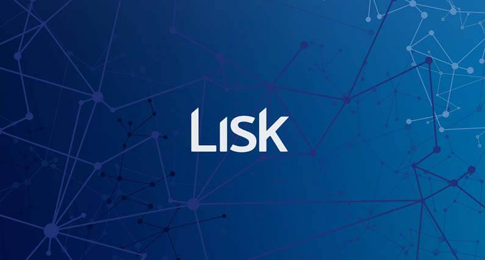
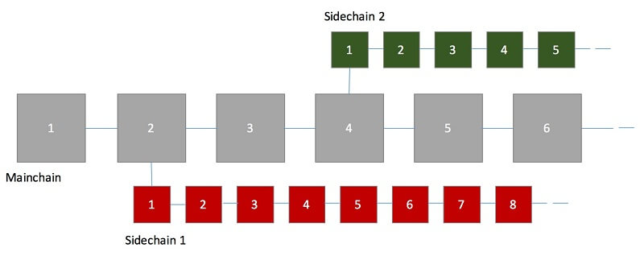

Mi az a Lisk? Útmutató kezdőknek
Lisk (LSK) egy decentralizált applikációs platform csakúgy mint Ethereum, Cardano, NEO. Lisk egyedi megközelítése a fejlesztői elérhetőség. Céljuk, hogy a lehető legegyszerűbb legyen egy Dapp létrehozása, amelyet egy teljes Javascript környezettel teszik lehetővé.
Ethereum-al ellentétben a dapp-ok nem a fő blokkláncon, hanem minden dapp-nak megvan a saját melléklánca. Ez a szerkezet rugalmasságot kínál és megvédi a fő Lisk blokkláncot a felhasználók által hibásan létrehozott dapp-októl. Erre azért van szükség, hogy ne fordulhasson elő még egy DAO incidens.
Mi az a Lisk?
Az egyik legnagyobb nehézsége a blokklánc iparágnak, hogy a fejlesztők nem rendelkeznek megfelelő tudással a blokkláncra való építésre. Aki Ethereum platformon szeretne építkezni annak meg kell tanulnia Ethereum saját programozási nyelvét a Solidity-t. Itt jön képbe Lisk.
Lisk fejlesztői Javascript programozási nyelvet használtak, mert úgy érezték, hogy a blokklánc technológia nem került elég gyorsan adaptálásra szélesebb körben. Azáltal, hogy Javascript-et használtak rengeteg Javascript fejlesztőnek teszik elérhetővé a blokklánc technológiát.
Javascript az egyik legnépszerűbb programozási nyelv a világon. JS használatával a Lisk csapat sokkal elérhetőbbé teszik platformjukat, amely több fejlesztőt jelent. A több fejlesztő pedig nagyobb értéket.
Lisk 2016-ban kezdte pályafutását ezért még meglehetősen új platformnak számít a decentralizált applikációk világában. Olyannyira új, hogy egyelőre még nincs is kész terméke se.
Lisk nem használ Proof of Work mechanizmust mint Bitcoin, vagy Proof of Stake-t mint Ethereum fog a jövőben. Ehelyett Delegated Proof of Stake mechanizmust használ. Ez azt jelenti, hogy minden Lisk birtokos szavazhat blokklánc képviselőkre akik biztosítják a hálózatot. Összesen egyszerre maximum 101 aktív képviselő lehet akik a legtöbb szavazatot birtokolják az egész hálózatban. Csak ők kaphatnak jutalmat új blokkok létrehozásáért. Ez a rendszer pénzügyi motivációként szolgál a képviselőknek. Minden többi képviselő vagy készenlétben van a kiválasztásra várva, vagy a mellék blokkláncot biztosítják.
Mi különbözteti meg Lisk-et?
Az egyik legnagyobb probléma Bitcoin-nal és Ethereum-al a bővíthetőség. Mivel a Lisk platform külön mellék blokkláncot hoz létre minden applikációnak amelyet rajta fejlesztenek, sokkal könnyebb bővíteni. Mivel a dapp-ok a mellék blokkláncon vannak fejlesztve ha valami baj történik az egyik applikáció blokkláncával az semmilyen hatással nem lesz a fő Lisk blokkláncra. Mellékláncok ugyancsak jobb biztonságot és gyorsabb alkalmazásokat jelentenek. Lisk is egy nyílt forráskódú platform.
Mellékláncok
Aki már kicsit belemerült a kriptopénzekbe az biztos ismeri a blokkláncot, amely egy nyilvános főkönyv ami tárolja az elvégzett tranzakciókat. Az egyik probléma a blokklánccal, hogy mesterségesen lelassítható teszt vagy hamis tranzakciókkal. Amikor túl sok az ilyen rossz tranzakció a blokk hamarabb megtelik ami lelassítja a hálózatot. Azt pedig senki nem szereti ha lassú a hálózat.
Lisk megoldása erre a mellék blokklánc. A mellék láncok kiegészítései a fő blokkláncnak. Képzelj el a megjegyzéseket egy könyvben. Kibővítheted a tartalmat anélkül, hogy zavarnád a fő szöveget. Mellékláncok hozzáadhatók a független fő blokklánchoz és tartalmazhatja a nagy mennyiségű tranzakciókat anélkül, hogy megterhelné a fő láncot. Ennek eredménye a gyors hálózat.
Lisk tárolása és vásárlása
Lisk beszerzése előtt érdemes letölteni és beállítani a Lisk hivatalos tárcáját a Lisk Nano-t. Ez egy ingyenesen használható asztali tárca amely Windows MacOS és Linux-on is futtatható. Fontos, hogy a biztonsági kifejezést gondosan jegyezzük fel, és tartsuk biztonságban. Számítógéped meghibásodása esetén ezzel visszaszerezheted tárcád tartalmát.
Miután ez megvan, Bitcoin vagy Ethereum-ra lesz szükséged amit BitPanda-n vagy Coinbase-n egyszerűen beszerezhetsz. Ezután a megszerzett kriptopénz cserélheted Lisk-re olyan kereskedelmi weboldalakon mint Binance, Poloniex vagy Bittrex.
Záró gondolatok
Sokan hasonlítják össze Ethereum-ot és Lisk-et azonban a Lisk alapító Max Kordek azt állítja, hogy nem versenytársa Ethereum-nak. Összességében a Lisk platform jól néz ki fejlesztői és programozói szempontból. Az, hogy Lisk Javascript alkalmazásával sokkal szélesebb körben tette elérhetővé, hogy a fejlesztők egy nagyobb csoportja fejleszthessen decentralizált applikációkat a jövőben igencsak kifizetődő lehet.


2018. Február 07.